urkimimi
Hamen
Hamen is a Python library I wrote to help me make Beat Saber modcharts.
It supports everything in the Heck suite from Noodle Extensions to Vivify.
Despite it having broad support with the mods, I wouldn't recommend using it unless you know how to interface with the Heck mod.
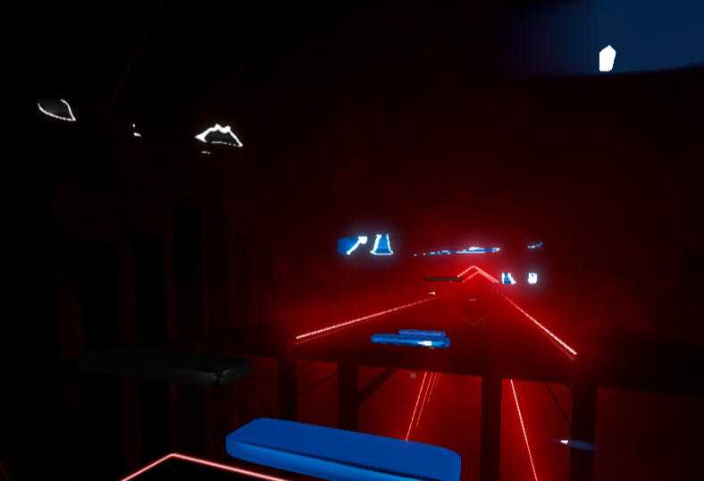
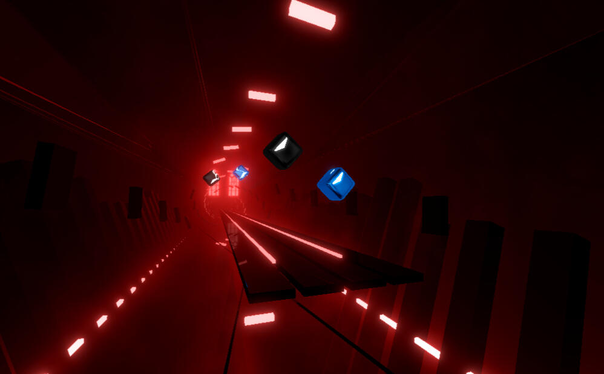
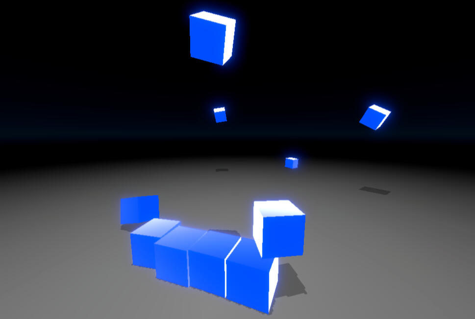
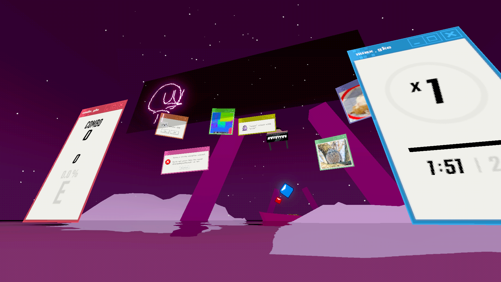
BSPTK
This project aims to port BS 0.12.x to platforms like Android, iOS, and more.
The shaders are made from the ground up using AmplifyShaderEditor and are available on Github.
What does the project name mean? I don't know I call it (Beat Saber Porting Torture Kit).
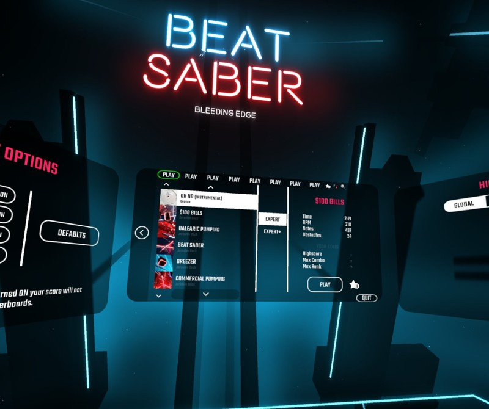
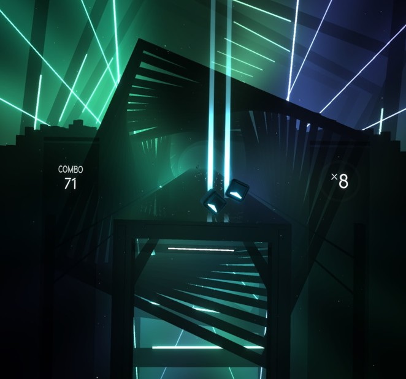
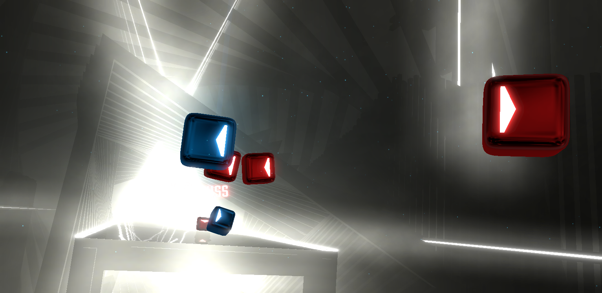
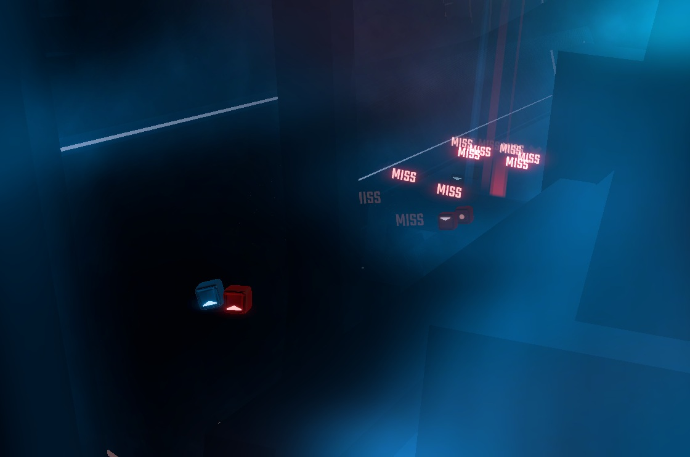
Blender
Besides the dumb Beat Saber stuff that I've done (that might show my diagnosis), I also know how to model in Blender.
Blender is a big collection of creative utilities but I usually focus on its 3D modeling and rendering.
I've been using the program for about five years for various use cases.
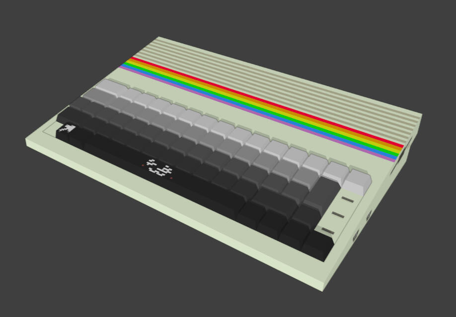
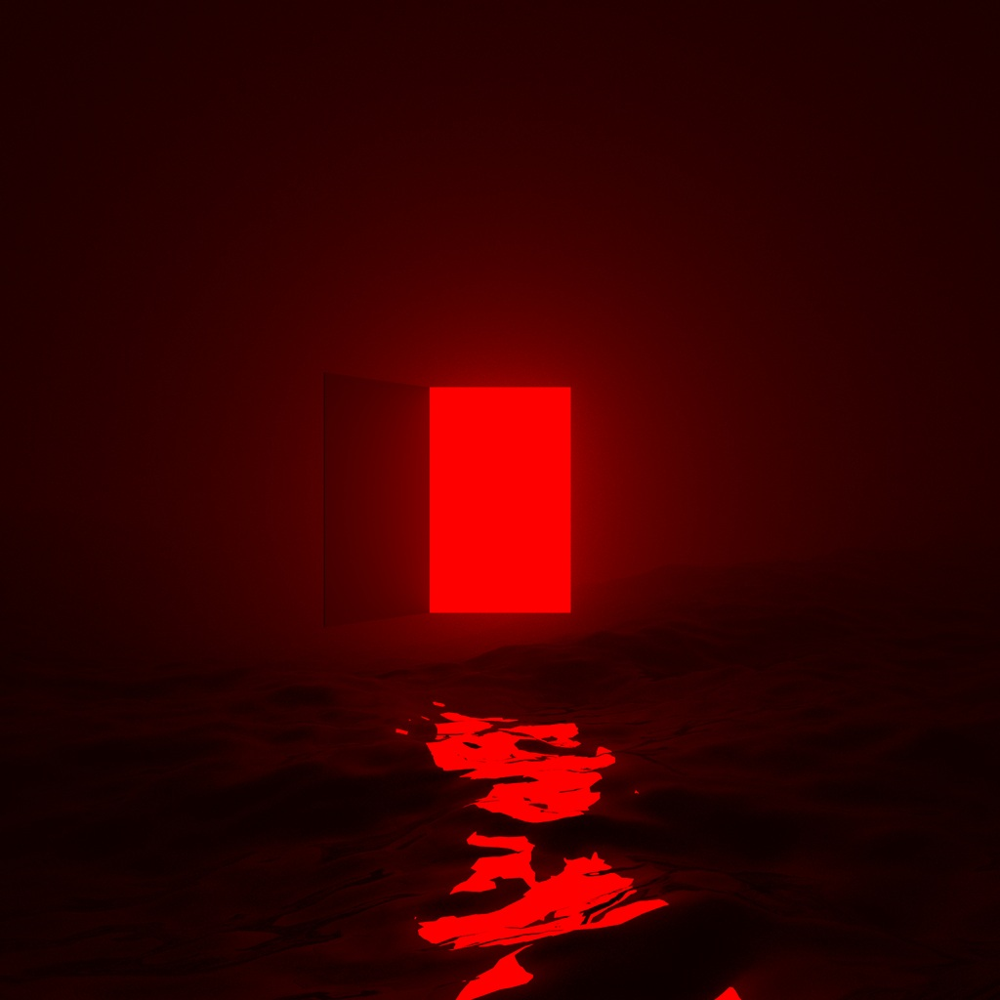
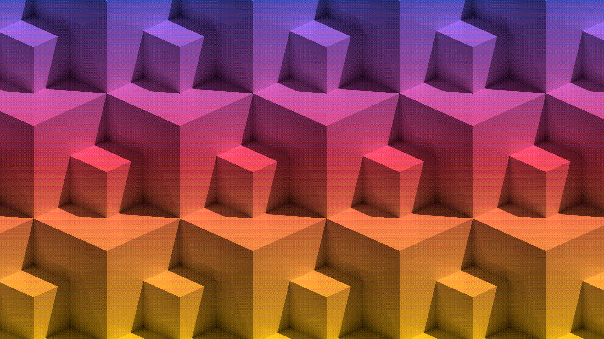